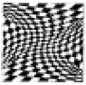
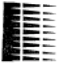

실내건축산업기사 (2005-05-29 기출문제)
1과목: 실내디자인론
1. 실내공간 구성요소 중 수직적 요소로 수평방향을 차단하여 공간을 형성하는 것은?
- 바닥
- 벽
- 천장
- 계단
(정답률: 81%)

2. 실내공간의 구성기법에 대한 설명 중 옳지 않은 것은?
- 개방공간구성은 필수적인 공간을 제외하고는 가능한 한 폐쇄공간을 두지 않는 구성방법으로 에너지 절약에도 유리하다.
- 폐쇄공간구성은 독립된 여러 실을 두는 것으로 프라이버시 확보에 유리하지만 융통성이 부족하다.
- 격자형공간구성은 조직화를 통해 시각적인 애매함을 제거하여 보다 논리적이고 객관적인 작업을 가능하게 한다.
- 다목적공간구성은 장래의 공간활용에 있어 양적, 질적 변화와 사회적 변화에 대처하기 위한 것으로 가변성이 높다.
(정답률: 67%)
3. 다음 중 실내디자인을 평가하는 기준과 가장 관계가 먼 것은?
- 기능성
- 경제성
- 주관성
- 심미성
(정답률: 73%)
4. 게슈탈트 이론 중 반전도형의 그림이 아닌 것은?


(정답률: 49%)
5. 실내 치수 계획으로 가장 부적합한 것은?
- 주택 침실의 반자높이 2.3m
- 상점내의 계단 단높이 25㎝
- 주택 출입문의 폭 90㎝
- 부엌 조리대의 높이 85㎝
(정답률: 48%)
6. 부엌의 작업삼각대를 이루는 가구의 배치 순서는?
- 준비대-개수대-조리대-가열대-배선대
- 준비대-조리대-개수대-가열대-배선대
- 준비대-가열대-개수대-조리대-배선대
- 준비대-개수대-가열대-조리대-배선대
(정답률: 79%)
7. 실내공간의 사용 목적에 의한 분류 중 틀린 것은?
- 숙박공간 - 호텔, 유스호스텔, 오피스텔
- 전시공간 - 박물관, 미술관
- 판매공간 - 백화점, 쇼핑센타, 전문점
- 주거공간 - 단독주택, 공동주택
(정답률: 72%)
8. 상점내 동선계획에 대한 설명 중 옳지 않은 것은?
- 종업원 동선의 폭은 최소 750mm 이상으로 하는 것이 좋다.
- 종업원 동선은 판매 종업원의 주업무인 판매 행위와 그밖에 관련된 출납ㆍ사무업무 등을 위한 작업동선을 말한다.
- 고객의 동선은 짧고 간단하게 하는 것이 이상적이다.
- 고객 동선은 흐름의 연속성이 상징적ㆍ지각적으로 분활되지 않는 수평적 바닥이 되도록 한다.
(정답률: 78%)
9. 주택의 개인공간에 대한 설명 중 잘못된 것은?
- 개인의 기호, 취미나 개성이 나타나도록 계획한다.
- 침실, 주방, 서재, 공부방 등을 말한다.
- 프라이버시(privacy)가 존중되어져야 한다.
- 욕실, 화장실, 세면실 등의 생리위생공간도 개인공간에 해당된다.
(정답률: 60%)
10. 방풍 및 열손실을 최소로 줄여주는 반면 통행의 흐름을 완만히 해주는데 가장 유리한 출입문 방식은?
- 미닫이문
- 회전문
- 여닫이문
- 미서기문
(정답률: 73%)
11. 다음 중 황금비례의 비율로 가장 알맞은 것은?
- 1:1.628
- 1:1.428
- 1:1.618
- 1:1.518
(정답률: 83%)
12. 디자인 프로세스 중 기획단계에서 진행되는 내용이 아닌 것은?
- 고객조사
- 부지조사
- 이미지 개념 도출
- 법규 등 건축규제 조사
(정답률: 49%)
13. 디자인의 기본요소에 대한 설명 중 옳지 않은 것은?
- 점은 선의 양끝, 선의 교차, 선의 굴절, 면과 선의 교차에서 나타난다.
- 점은 어떤 형상을 규정하거나 한정하고, 면적을 분할 한다.
- 2차원적 형상에 깊이나 볼륨을 더하면 3차원적 형태가 창조된다.
- 평면이란 완전히 평평한 면을 말하는데 이는 선들이 교차함으로써 이루어진다.
(정답률: 66%)
14. 실내디자인에 대한 다음 설명 중 가장 올바른 것은?
- 실내디자인은 대상 공간의 기능보다 장식을 더 고려한다.
- 실내디자인은 인간 공학적인 내용을 적용할 필요가 없다.
- 실내디자인은 실내공간만을 다루는 것으로 건축적인 내용은 고려하지 않는다.
- 실내디자인은 기능과 아름다움, 쾌적함을 모두 고려해야 한다.
(정답률: 83%)
15. 다음의 각 선이 가지는 느낌에 대한 설명 중 옳지 않은 것은?
- 수직선 - 생동감 넘치는 에너지
- 수평선 - 무한으로 펼쳐지는 지평선
- 사선 - 상승·하강에서 오는 약동감
- 곡선 - 유연, 우아, 경쾌, 풍요
(정답률: 64%)
16. 디자인 원리인 통일과 변화에 대한 설명으로 맞는 것은?
- 변화는 적절한 절제가 되지 않으면 공간의 통일성을 깨트린다.
- 조형에 대한 부수적 요소가 된다.
- 디자인에서 통일은 다양한 변화를 의미한다.
- 통일과 변화는 상호 대립된 관계로 서로 공존할 수 없다.
(정답률: 68%)
17. 다음 중 상징적 경계에 대한 설명으로 가장 알맞은 것은?
- 경계를 만들지 않는 것이다.
- 담을 쌓은 후 상징물을 설치하는 것이다.
- 물리적 성격이 약화된 시각적 영역표시를 말한다.
- 슈퍼그래픽을 말한다.
(정답률: 58%)
18. 실내디자인의 계획조건 중 외부적 조건에 속하지 않는 것은?
- 계획대상에 대한 교통수단
- 기둥, 보, 벽 등의 위치와 간격치수
- 소화설비의 위치와 방화구획
- 실의 규모에 대한 사용자의 요구사항
(정답률: 70%)
19. 천장에 매달려 조명하는 방식으로 조명기구 자체가 빛을 발하는 악세사리 역할을 하는 조명방식은?
- 다운라이트(down light)
- 스포트라이트(spot light)
- 펜던트(pendant)
- 브라켓(bracket)
(정답률: 70%)
20. 다음 중 그리스 신전건축에서 사용된 착시교정 수법이 아닌 것은?
- 모서리쪽의 기둥 간격을 보다 좁혀지게 만들었다.
- 기둥을 옆에서 볼 때 중앙부가 약간 부풀어 오르도록 만들었다.
- 기둥과 같은 수직 부재를 위쪽으로 갈수록 약간 안쪽으로 기울어지게 만들었다.
- 아키트레이브, 코니스 등에 의해 형성되는 긴 수평선을 아래쪽으로 약간 불룩하게 만들었다.
(정답률: 30%)
2과목: 색채 및 인간공학
21. 시각과 관계되는 잔상(殘像)의 설명 중 틀린 것은?
- 양잔상에서는 흑색은 흑색, 백색은 백색으로 보인다.
- 음잔상에서는 흑백이 뒤바뀐다.
- 유채색일 경우는 실제 본 색의 보색이 잔상으로 남는다.
- 각막의 자극 후 시신경에 흥분이 사라진 상태를 말한다.
(정답률: 57%)
22. 인간의 피부면에 가장 넓게 포진되어 있으며 가장 빨리 대뇌에 전달되는 감각은?
- 통각
- 온각
- 압각
- 미각
(정답률: 71%)
23. 청각과 관계된 음의 측정단위를 나타낸 것 중 음의 측정단위와 관계 없는 것은?
- watt/cm2
- dyne/cm2
- decibel(dB)
- cm/sec2
(정답률: 35%)
24. 다음 중 인간의 오류(human error)와 관련된 설명이다. 거리 가장 먼 것은?
- 인간이 오류를 범하여도 시스템이 안전하도록 설계하는 fail safe, fool proof개념을 도입하여 작업장을 설계한다.
- 오류의 근원적인 원인을 찾아내서 제거하는 것이 가장 바람직하다.
- 교육, 훈련의 효과가 가장 직접적이므로, 적절한 보상과 함께 실시한다.
- 컴퓨터 시뮬레이션 등을 통하여 사전에 작업내용을 숙지시키면 큰 효과가 있다.
(정답률: 38%)
25. 다음 중 추천반사율이 가장 낮은 것은?
- 가구
- 벽
- 바닥
- 천장
(정답률: 54%)
26. 다음 중 인간의 청각을 고려한 신호 표현을 구상할 때 틀린 것은?
- 지나치게 고강도의 신호를 피한다.
- 주변 소음 수준에 상대적인 세기로 설정한다.
- 청각으로 과부하 되지 않게 한다.
- 지속적인 신호로 인지할 수 있게 한다.
(정답률: 62%)
27. 인체 측정치 중 앉은 눈높이의 올바른 설명은?
- 앉은 의자면에서 눈섭까지의 수직거리
- 앉은 의자의 다리 끝에서 눈섭까지의 수직거리
- 앉은 의자면에서 눈까지의 수직거리
- 앉은 의자의 다리 끝에서 눈까지의 수직거리
(정답률: 36%)
28. 일반적인 경우 강당에 설치하는 스피커의 가장 이상적인 위치는?
- 관객의 머리 높이 정도
- 무대 높이 정도
- 관객의 머리위, 20∼25˚정도
- 무대보다 높은 위치, 10∼15˚정도
(정답률: 48%)
29. 다음 감성공학과 관련된 설명 중 틀린 것은?
- 인간의 심상을 구체적인 물리적인 요소로 번역하는 기술을 말한다.
- 감성공학은 구미에서 주로 개발된 기법이다.
- 자동차나 전자제품 등을 소비자의 취향에 맞게 개발할 때 적용할 수 있다.
- 감성공학과 기존 기술체계와의 근본적인 차이점은 정서적 충족과 물리적 편리성의 확보라는 목표에 있다.
(정답률: 70%)
30. 무색의 광선을 착색하려면 희망하는 색을 반사면에 칠하는 데 이는 색채의 어느 기능 때문인가?
- 색채조절 기능
- 광색(光色)조절 기능
- 휘도(輝度)조절 기능
- 명시도(明視度)조절 기능
(정답률: 60%)
31. 오스트발트 색상분할의 기본이 되었던 이론은?
- 색료의 3원색 이론
- 헤링의 4원색 이론
- 먼셀의 색상환 이론
- 빛의 3원색 이론
(정답률: 32%)
32. 난색과 한색에 관한 설명 중 틀린 것은?
- 파랑, 남색, 청록색은 한색에 속한다.
- 연두와 보라는 난색과 한색의 중간으로 어디에도 속하지 않는다.
- 빨강, 주황, 노랑은 난색에 속한다.
- 한색은 일반적으로 난색보다 사람에게 친근감을 준다.
(정답률: 56%)
33. 다음 중 가장 연하고 부드러운 느낌의 색은?
- 채도가 높고 명도가 낮은 색
- 채도가 낮고 명도가 높은 색
- 채도, 명도 모두 낮은 색
- 채도, 명도 모두 높은 색
(정답률: 44%)
34. 다음 중 색광의 3원색이 아닌 것은?
- yellow
- red
- green
- blue
(정답률: 58%)
35. 편안함, 안정감을 상징하는 색은?
- 녹색
- 파랑
- 보라
- 주황
(정답률: 64%)
36. 어린아이 옷의 흰색과 노랑 배색이 주는 느낌은?
- 경쾌하다.
- 중후하다.
- 침착하다.
- 균형적이다.
(정답률: 75%)
37. 다음 중 색의 진출, 후퇴의 일반성으로 틀린 것은?
- 난색계는 한색계보다 진출성이 있다.
- 배경색의 채도가 낮은 것에 대한 높은 색은 진출한다.
- 배경색과의 명도차가 큰 밝은 색은 진출한다.
- 배경색의 채도가 높은 것에 대한 낮은 색은 진출한다.
(정답률: 51%)
38. 한 번 분광(分光)된 빛은 다시 프리즘을 통과시켜도 그 이상 분광되지 않는 것을 무엇이라고 하는가?
- 가시광선(可視光線)
- X 선
- 스펙트럼(Spectrum)
- 단색광(單色光)
(정답률: 38%)
39. 색채계획 과정에 대한 설명 중 잘못된 것은?
- 색채환경분석 : 경합업계의 사용색을 분석
- 색채심리분석 : 색채구성능력과 심리조사
- 색채전달계획 : 아트 디렉션의 능력이 요구되는 단계
- 디자인에 적용 : 색채규격과 컬러메뉴얼을 작성하는 단계
(정답률: 34%)
40. 다음 색채의 여러 지각현상에 관한 설명으로 맞는 것은?
- 중성색과 난색을 대비시키면 중성색이 따뜻하게 느껴진다.
- 두 색이 붙어있는 경계 언저리에서는 대비현상이 약하게 일어난다.
- 섬세한 줄무늬처럼 주위를 둘러싼 면적이 작을 때는 주위색과 가깝게 느껴진다.
- 보색끼리 대비시키면 두 색의 선명도가 떨어져 보인다.
(정답률: 35%)
3과목: 건축재료
41. 다음의 각종 석재에 관한 설명 중 틀린 것은?
- 안산암은 강도, 경도, 비중이 크고 내화력도 우수하다.
- 화강암은 질이 단단하고 내구성 및 강도가 크고 외관이 수려하며, 절리의 거리가 비교적 커서 대재를 얻을 수 있다.
- 대리석은 강도가 높고 산에 강하기 때문에 실외용으로 사용이 적합하다.
- 점판암은 석질이 치밀하고 박판으로 채취할 수 있으므로 슬레이트로서 지붕 등에 사용된다.
(정답률: 63%)
42. 점토제품에 대한 설명으로 틀린 것은?
- 과소벽돌은 형태와 색채가 고르지 못하고, 균열이 많아 견고하지 못하다.
- 타일의 착색재료에는 주로 금속산화물을 이용한다.
- 테라코타는 건축물의 패러핏, 주두 등의 장식에 사용되는 공동의 대형 점토제품을 말한다.
- 내화벽돌의 내화도는 S.K.번호로 나타내며 No.26부터 내화벽돌로 본다.
(정답률: 26%)
43. 골재의 함수량에 관한 기술 중 틀린 것은?
- 흡수량 = 표면건조 내부포수상태 함수량
- 표면수량 = 습윤상태 함수량 - 기건상태 함수량
- 유효 흡수량 = 표면건조 내부포수상태 함수량 - 기건상태 함수량
- 기건상태 함수량 = 습윤상태 함수량 - 유효흡수량 - 표면수량
(정답률: 26%)
44. 미장재료의 종류와 특성에 대한 설명 중 틀린 것은?
- 시멘트 모르타르는 시멘트를 결합재로 하고 모래를 골재로 하여 이를 물과 혼합하여 사용하는 수경성 미장재료이다.
- 테라조 현장바름은 주로 바닥에 쓰이고 벽에는 공장제품 테라조판을 붙인다.
- 소석회는 돌로마이트 플라스터에 비해 점성이 높고, 작업성이 좋기 때문에 풀을 필요로 하지 않는다.
- 석고플라스터는 경화ㆍ건조시 치수안정성이 우수하며 내화성이 높다.
(정답률: 60%)
45. 목재의 성질에 대한 설명 중 틀린 것은?
- 열전도율이 커서 보온 효과가 떨어진다.
- 비중이 작은데 비해 강도가 크다.
- 수액을 제거하고 건조하면 건조속도가 빨라진다.
- 가공이 용이하고 재질이 부드럽다.
(정답률: 63%)
46. 철강의 부식에 관한 설명 중 틀린 것은?
- 토양속에서의 강재부식은 전기전도도가 낮을수록, pH값이 높을수록 빠르다.
- 철강의 표면은 대기중의 습기나 탄산가스와 반응하여 수산화제이철, 수산화제일철 및 탄산철 등으로 구성되는 녹을 발생시킨다.
- 물 특히 바닷물 속에서 부식되기 쉬우며, 물과 공기에 번갈아 접촉시키면 더욱 부식되기 쉽다.
- 철근콘크리트 중의 철근 부식은 콘크리트의 성질에 영향을 크게 받는다.
(정답률: 30%)
47. 돌로마이트에 화강석부스러기, 색모래, 안료 등을 섞어 정벌바름하고 충분히 굳지 않은 때에 표면을 거친 솔 등으로 긁어 거칠게 마무리 하는 미장바름은?
- 리신바름
- 라프코트
- 흙벽바름
- 섬유벽바름
(정답률: 57%)
48. 광선에 대한 굴절율이 크나 열(熱),산(酸)에는 약하고 쉽게 용융되는 성질을 가지고 있으며 광학렌즈, 고급식기, 모조보석용으로 쓰이는 유리는?
- 소다석회유리
- 고규산유리
- 칼륨석회유리
- 칼륨연유리
(정답률: 15%)
49. 투명도가 극히 높고 항공기의 방풍유리나 조명기구, 도료, 접착제로 사용되는 것으로 유기(有機)유리로 불리어지는 것은?
- 염화비닐 수지
- 에폭시 수지
- 실리콘 수지
- 메타크릴 수지
(정답률: 33%)
50. 목재 및 기타 식물의 섬유질소편에 합성수지접착제를 도포하여 가열압착성형한 판상제품은?
- 합판
- 파티클보드
- 집성목재
- 파키트리보드
(정답률: 66%)
51. 도료의 사용 용도에 관한 설명 중 올바르지 않은 것은?
- 아스팔트 페인트 : 방수, 방청, 전기절연용으로 사용
- 유성 바니쉬 : 내후성이 우수하여 외부용으로 사용
- 징크로메이트 : 알루미늄판이나 아연철판의 초벌용으로 사용
- 합성수지페인트 : 콘크리트나 플라스터면에 사용
(정답률: 26%)
52. 점토제품에 대한 설명으로 옳은 것은?
- 일반적으로 외장타일은 건식으로 제조한 것이 많이 쓰인다.
- 보통벽돌이 적색 또는 적갈색을 띠고 있는 것은 원료점토 중에 포함되어 있는 산화철에 기인한다.
- 오지벽돌은 점토에 톱밥, 겨, 탄가루 등을 혼합, 소성한 것으로 방음, 흡음성이 좋다.
- 테라코타는 흡수성이 높아 구조용으로 사용할 수 없다.
(정답률: 35%)
53. ALC(autoclaved lightweight concrete)제품에 관한 설명 중 틀린 것은?
- 주원료는 백색포틀랜드 시멘트이다.
- 보통콘크리트에 비해 다공질이고 열전도율이 낮다.
- 물에 노출되지 않는 곳에서 사용하도록 한다.
- 보통콘크리트에 비하여 중성화의 우려가 높다.
(정답률: 34%)
54. 창호 철물 중 오르내리창을 잠그는데 사용되는 것은?
- 도어스톱
- 피봇힌지
- 도어체크
- 크레센트
(정답률: 41%)
55. 유성페인트에 관한 설명 중 옳지 않는 것은?
- 저온다습할 경우 특히 건조시간이 길다.
- 붓바름 작업성 및 내후성이 뛰어나다.
- 보일유와 안료를 혼합한 것을 말한다.
- 내알칼리성이 우수하다.
(정답률: 58%)
56. 다음 중 기경성 미장재료로 묶어 놓은 것은?
- 돌로마이트 플라스터, 테라조바름
- 테라조바름, 회반죽
- 돌로마이트 플라스터, 회반죽
- 석고 플라스터, 돌로마이트 플라스터
(정답률: 38%)
57. 급경성으로 내알칼리성 등의 내화학성이나 접착력이 크고 내수성이 우수하며 금속, 석재, 도자기, 유리, 콘크리트, 플라스틱재 등의 접착에 모두 사용되는 접착제는?
- 페놀수지 접착제
- 요소수지 접착제
- 멜라민수지 접착제
- 에폭시수지 접착제
(정답률: 61%)
58. 다음의 목재에 관한 설명 중 옳은 것은?
- 일반적으로 전단강도를 제외하고 응력의 방향이 섬유방향에 평행한 경우 강도가 최대가 된다.
- 함수율이 30% 이하에서는 함수율의 감소에 따라 강도가 저하된다.
- 일반적으로 동일 수종에서는 변재의 강도가 심재보다 크다.
- 압축력과 인장력의 변형률은 섬유방향에 관계없이 인장 시의 변형률이 더 크다.
(정답률: 38%)
59. 다음의 비철금속에 관한 설명 중 옳은 것은?
- 알루미늄은 융점이 높기 때문에 용해주조도는 좋지 않으나 내화성이 우수하다.
- 황동은 동과 주석 또는 기타의 원소를 가하여 합금한 것으로 청동과 비교하여 주조성이 우수하다.
- 니켈은 아황산 가스가 있는 공기에서는 부식되지 않지만 수중에서는 색이 변한다.
- 납은 내식성이 우수하고 방사선의 투과도가 낮아 건축에서 방사선 차폐용 벽체에 이용된다.
(정답률: 41%)
60. 골재의 성질에 관한 설명 중 옳은 것은?
- 골재의 강도는 콘크리트 중의 경화시멘트 페이스트의 강도보다 작아야 한다.
- 잔골재의 염분허용한도는 0.4%(NaCl)이하이어야 한다.
- 실적률이 큰 골재를 사용하면 콘크리트의 마모저항과 내구성이 감소된다.
- 입도란 골재의 대소립이 혼합하여 있는 정도를 말하며 입도시험은 체분석시험이 사용된다.
(정답률: 29%)
4과목: 건축일반
61. PC(프리캐스트 콘크리트)구조의 특징이 아닌 것은?
- 골조를 구성하는 대개의 부재가 공장에서 제작되기 때문에 품질의 향상, 공기단축 등의 이점이 있다.
- 사전에 창호, 설비용의 파이프 등을 설치해 둘 수가 있다.
- 중층의 공동 주택에 많이 쓰인다.
- PC 부재의 접합(이음)부가 크면 클수록 좋다.
(정답률: 47%)
62. 다음 중 그리스 신전 건축의 구성요소가 아닌 것은?
- 엔타블레쳐(Entablature)
- 버트레스(Buttress)
- 페디먼트(Pediment)
- 캐피탈(Capital)
(정답률: 14%)
63. 건축물에 설치하는 방화벽의 구조에 대한 설명으로 옳지 않은 것은?
- 내화구조 또는 불연재료로서 홀로 설 수 있는 구조라야 한다.
- 방화벽에 설치하는 출입문의 너비 및 높이는 각각 2.5m 이하로 한다.
- 방화벽의 양쪽 끝과 위쪽 끝을 건축물의 외벽 및 지붕면으로부터 0.5m 이상 튀어 나오게 한다.
- 방화벽에 설치하는 출입문에는 갑종방화문을 설치하여야 한다.
(정답률: 17%)
64. 다음 중 일체식 구조에 해당하는 것은?
- 목구조
- 블록구조
- 철골구조
- 철근콘크리트구조
(정답률: 74%)
65. 거실의 용도에 따른 조도기준이 잘못 연결된 것은?
- 식사 - 150 룩스
- 회의 - 300 룩스
- 계산 - 300 룩스
- 관람 - 70 룩스
(정답률: 27%)
66. 다음 중 르 꼬르뷔제(Le Corbusier)가 주창한 근대건축의 5원칙에 속하지 않는 것은?
- 유기적 공간
- 필로티
- 옥상정원
- 자유로운 평면
(정답률: 43%)
67. 다음 중 방염대상물품에 해당하지 않는 것은?
- 전시용 합판
- 종이벽지
- 카페트
- 창문에 설치하는 브라인드
(정답률: 69%)
68. 벽돌쌓기 방식 중 한 켜는 마구리 쌓기, 다음 켜는 길이 쌓기를 교대로 쌓고 모서리에는 이오토막을 사용하는 쌓기법은?
- 미식 쌓기
- 영식 쌓기
- 불식 쌓기
- 화란식 쌓기
(정답률: 49%)
69. 건설교통부령이 정하는 구조기준 및 구조계산에 의하여 그 구조의 안전을 확인하여야 하는 대상 건축물은?
- 층수가 2층인 건축물
- 연면적이 800m2인 건축물
- 처마높이가 9m인 건축물
- 기둥과 기둥사이의 거리가 7m인 건축물
(정답률: 52%)
70. 1897년 오스트리아 비인에서 오토바그너의 영향하에 조셉 호프만이 시작한 운동으로 과거양식에서 분리와 해방을 지향하는 건축운동은?
- 쎄제션
- 아르누보
- 낭만주의
- 절충주의
(정답률: 3%)
71. 목구조의 각 부재에 관한 설명 중 옳지 않은 것은?
- 층도리는 2층 마루 바닥이 있는 부분에 수평으로 대는 가로재이다.
- 샛기둥은 가새의 옆휨을 막는데 유효하다.
- 양식 구조에서는 처마도리 위에 지붕틀을 걸고 지붕틀의 평보 위에 처마도리와 같은 방향으로 깔도리를 걸쳐댄다.
- 토대는 기초 위에 가로놓아 상부에서 오는 짐을 기초에 전달하며, 기둥 밑을 고정하고 벽을 치는 뼈대가 되는 것이다.
(정답률: 28%)
72. 연결송수관설비를 설치하여야 할 특정소방대상물이 아닌것은?
- 층수가 5층 이상으로서 연면적 6,000m2 이상인 것
- 지하층을 포함하는 층수가 7층 이상인 것
- 지하층의 층수가 3개층 이상이고 지하층의 바닥면적의 합계가 1,000m2 이상인 것
- 지하가 중 터널로서 길이가 1,000m 이상인 것
(정답률: 42%)
73. 건축물과 건축양식의 연결이 옳지 않은 것은?
- 아크로폴리스(Acropolis)-그리스건축
- 오벨리스크(obelisk)-메소포타미아건축
- 판테온(Pantheon) 신전-로마건축
- 아미앵(Amiens)성당-고딕건축
(정답률: 44%)
74. 다음 중 한국의 목조건축에서 기둥에 사용된 의장기법이 아닌 것은?
- 민도리
- 귀솟음
- 안쏠림
- 배흘림
(정답률: 35%)
75. 연약한 지반에서 부동침하를 방지하는 대책으로 옳지 않은 것은?
- 지하실을 강성체로 설치한다.
- 지지말뚝과 마찰말뚝을 혼용한다.
- 건물을 경량화한다.
- 이웃건물과의 거리를 멀게 한다.
(정답률: 28%)
76. 미장이 안된 표준형 점토벽돌 2.0B 벽두께 치수로 옳은 것은? (공간쌓기 아님)
- 390mm
- 420mm
- 430mm
- 450mm
(정답률: 71%)
77. 철골구조와 직접 관계가 없는 용어는?
- 스티프너(Stiffner)
- 거싯 플레이트(Gusset plate)
- 플랜지(Flange)
- 스터럽(Stirrup)
(정답률: 39%)
78. 보강콘크리트블록구조의 내력벽의 벽량은 최소 얼마 이상으로 하여야 하는가?
- 10㎝/m2
- 15㎝/m2
- 20㎝/m2
- 25㎝/m2
(정답률: 28%)
79. 6층 이상의 거실면적의 합계가 8,000m2인 백화점에 설치해야 할 8인승 승용승강기의 최소 대수는?
- 2대
- 3대
- 4대
- 5대
(정답률: 20%)
80. 다음 건축물 중 건설교통부령이 정하는 기준에 따라 당해 건축물로부터 바깥으로 나가는 출구를 설치하지 않아도 되는 것은?
- 판매 및 영업시설중 상점
- 의료시설중 장례식장
- 업무시설 중 지방자치단체의 청사
- 문화 및 집회시설중 전시장
(정답률: 39%)